August 2017 — Berlin, Germany
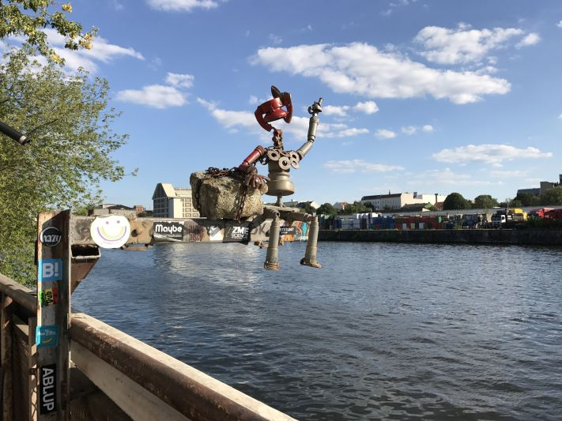Ah, Berlin.
Where dreams of young and innovative startups rise and burst like soap bubbles, where cheery selfies are taken at a holocaust memorial and where vandalism is art and culture. It is the perfect place for a WaitButWhy reader meeting because any place is the perfect place for a WaitButWhy reader meeting because a WaitButWhy reader meeting is not about the place, it's about WaitButWhy readers.
The venue was a charming camping place in Mahlow which lies in the South of Berlin. It was disgustingly tidy and the dude there was suspiciously nice, everything as you would expect it on a German camping place. A place totally worth being camped upon by our illustrious society.
The Occupation Begins
by Cristina from Romania and Mirko from Germany setting up the base camp.
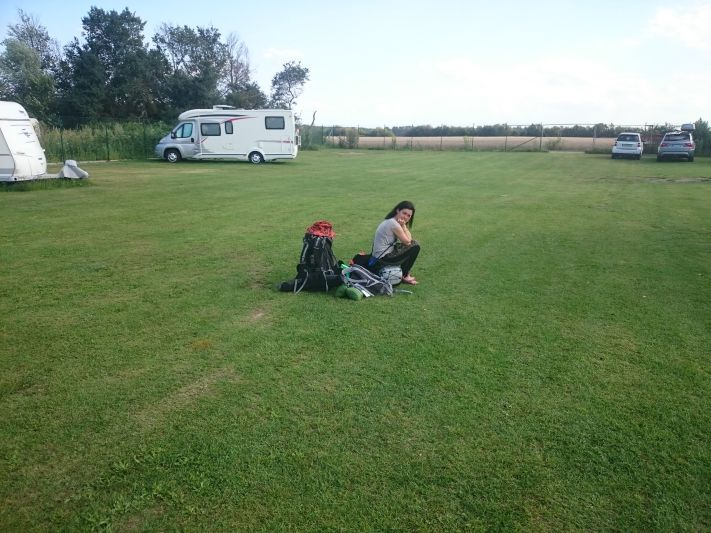Done.
A sense of excitement was in the air. It has begun. Will it be as mind-bogglingly amazing as the last meeting? Is camping the right thing for such a thing? We shall see. Soon there was also a sense of a shitton of mosquitos in the air. And then the first attendee arrived. It was Fausto from Spain aka Laserfist. In contrast to Cristina and Mirko, he actually brought a tent. Fantastic idea.
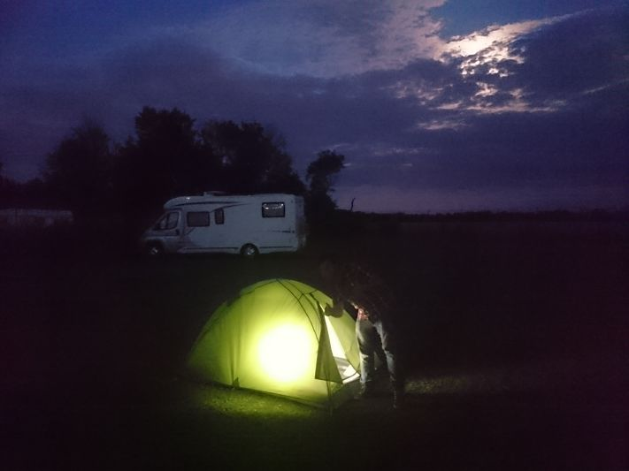Suddenly we were confronted with the first major issue: No beer. The little shop at the camping site was already closed and the closest village was half an hour on foot away. But drastic circumstances require drastic measures and so we formed an away team which consisted of all three of us and embarked into uncharted territory, unaware of the obstacles and dangers that lay ahead of us.
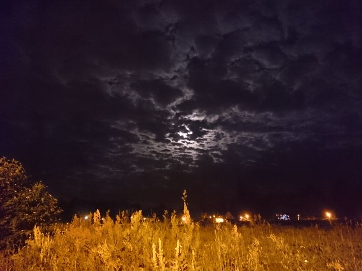Turned out there were none.
Shortly after we came back (also shortly after midnight), a delegation of Netherlanders arrived. They should constitute the strongestly represented nation in our gathering. Also, they brought some more tenting as you cannot see on the next picture. Very nice of them.
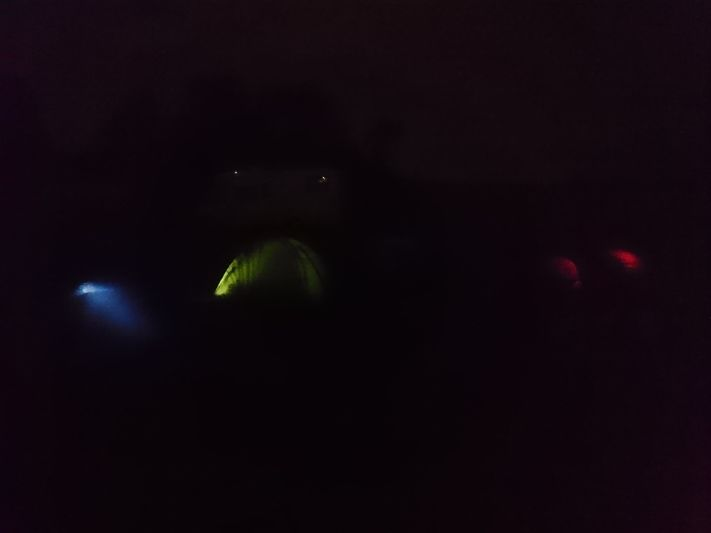Saturday
's plan was to get up early (lol) to go hiking around the camping site in order to be near when people arrive. Four different hiking routes were prepared beforehand, between 13km and 19km length, exploring different areas in the area. We wanted to split up into three groups doing three consecutive tours so that one group can always stay at the site welcoming the new comers while the other two groups were out hiking. Sorta lika three-field farm system.
In the end we just left Cristina at the camp and did half of the smallest tour around noon. The area was shitty to hike because we were either walking on the cars' side of the bed since there was no other path or through super dense forest full of mosquitos or along otherwise not exciting trails. You can imagine the mood that we were in. Things like "Is it still far?" "I wanna go home!" "You guys suck!" were yelled from the back. Except they were not really but it felt like they could have been if people hadn't been so awesome.
Upon return, a couple of new people had already arrived. A phenomenon occurred that we were already used to from the last meeting: people getting along like a charm without anyone having to put in effort for that to happen.
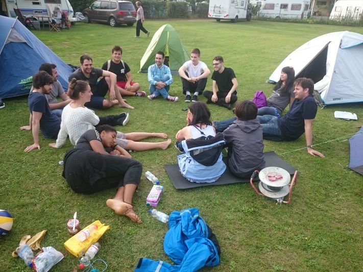Then we were having dinner at the Steakhaus Barbecue Mahlow in Mahlow. Nice place, nice food. And the discussions were great.
On the way home we collected some firewood. There was plenty of that lying around close-by because for some sick harrowing reason, campfire just doesn't seem to be a thing around here. But well, more for us. The campfire was running in no time thanks to Kadia from Afr the Netherlands. She probably used bl regular magic or something.
And the fire was just... it was just magical. Sitting around a campfire with cool people and talking or just staring into the hypnotizing glow is just something that uncool people will never grasp.

Albert from Sweden decided to use this unique opportunity. He wanted to discuss cryonics and was finally sitting with people where he didn't have to explain what that is and why it's not crazy. So he presented the pros and cons that he sees and we debated it. It was a super cool discussion, exactly in the spirit that we want to embrace with these meetings.
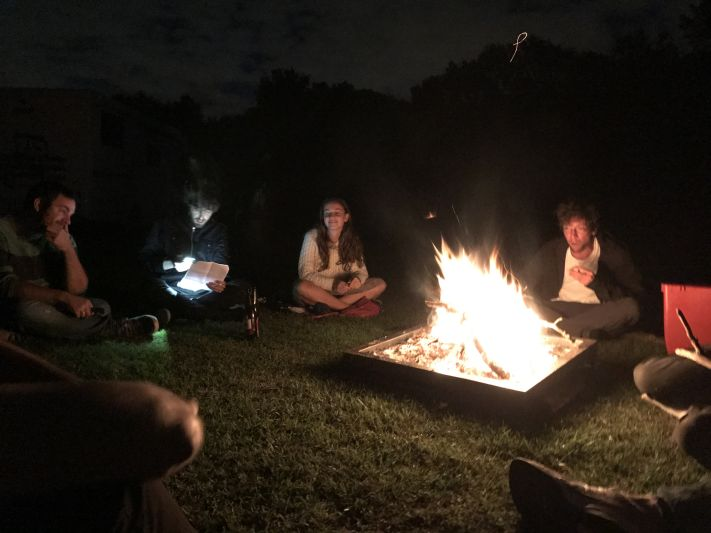Being the brilliant crowd of thinktanky ultra bright minds that we are, we thought that it would be a good idea to put soaking wet cardboard under the firebowl in order to protect the grass. It should absorb the heat and keep the ground below 100°C, right? And it did, for about 10 minutes. Then all the water transcended into vapor (which looked pretty cool since it steamed out from under the bowl) and then the cardboard caught fire. So did the grass. We left a black square of disaster. Luckily the camping place guy was chill about it. And we have learned something, which is what life is all about, right?
Sunday
No trip to Berlin without some serious Nazi horror history shockedness stuff going down. That's what Sunday was all about.
First we had to notice that the bus to Mahlow does not go on Sundays, so we were condemned to walking again. But more on that later. Our first goal for today were
The Underworlds of Berlin
next to the metro station Gesundbrunnen.

Turns out that being the nice fellah that he was, Hitler thought that it'd be pretty dope to provide some sweet-ass shelter for his Berlin folks in case of an attack or some'm. So we thought that it'd be pretty dope to see one of these shelters. The tour guide told us that the conditions in there were horrible, suffocation was always an imminent threat and people did not always make it to the toilets which contributed additional discomfort. On the flop side though, the shelters were not even deep enough to provide protection against bombing. So the least we can do is giving them some purpose by visiting them. Our tour guide was fantastic, she did a great job at guiding us into the mood of what actually being there back in the days must have felt like. Unfortunately we were not allowed to take pictures so you have to go there yourself. It's worth it.
Fun fact: We were not allowed to touch the walls because they were glow-in-the-dark and contained not so good chemistry. That made some memories come up... When we visited the salt mine in Turda last year, we were not allowed to lick the walls because they still contained smoke particles and might have laxative effects. Poisonous walls seem to become a thing with these meetings.
Afterwards we ate some traditional German lunch which is of course Döner.

Mert from Turkey took care of the correspondence with the Döner people since restauranters always love to be addressed in their root language.
The Tempelhofer Feld
was the next item on our list. It is an abandoned military airport that was turned into a park and a refugee camp. The atmosphere there is unique. There is just sooo much space! Normally, when annoying people visit a park, they bring their annoying music to annoy the regular people. Or they bring a ball which they can't control well enough to not be annoying with it. Or they bring other instruments of annoyance. However, Tempelhofer Feld is just sooo humongous that not even a complete school worth of children with vuvuzelas could cover it with annoyingness. You will always find some peace and quiet there. It's beautiful.
However, we wanted to picnic there so we first went shopping in some hipster bio shop. It was very hipster. And it was also the first time that we forgot Fausto somewhere. On our way to the airport some of us left the metro to take some pics of us at the wall.
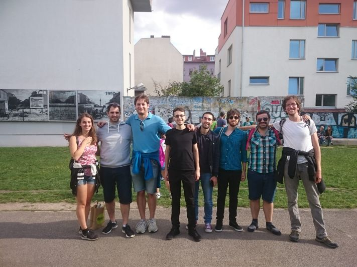At the airport we embroce the atmosphere with some nice picnic...
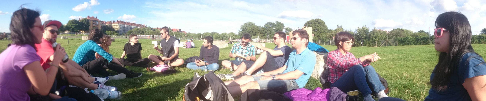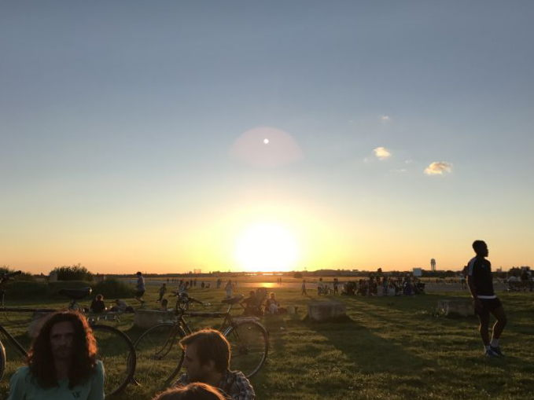
and some chill strolling across the runways (which is something you don't get to do at many places).
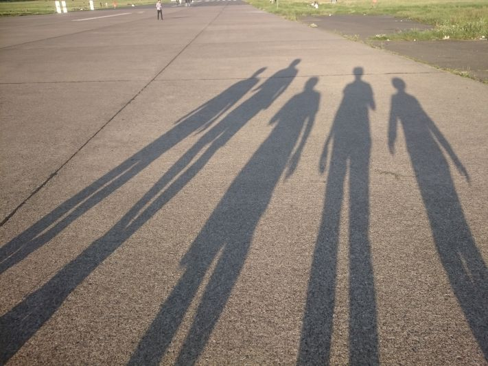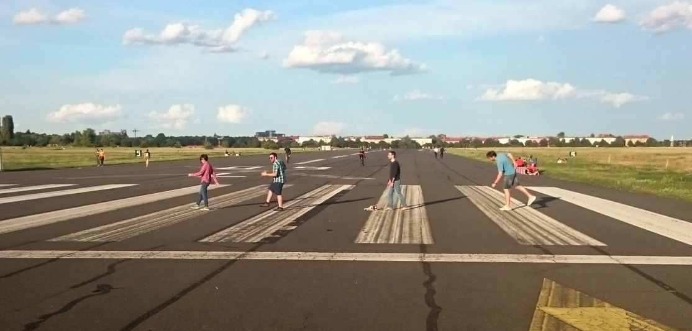
Afterwards we headed back to the camp. Some dined in Mahlow, the others prepared the fire. Speaking about heading back. The 30 minute walk between the camping place and Mahlow...
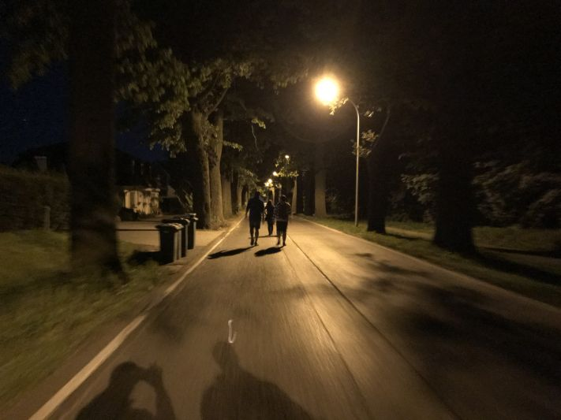... was something that we were forced to do on Sunday because there was no bus. However, it provided a great platform for nice discussions in small groups of people one wants to talk to and we almost never took the bus ever after. We shall henceforth commit to incorporating this kind of walks into our meetings. And we say that as if those meetings were already a regular thing where there is no question whether there even is a next one, but that's only because that is absolutely the case.
The fire was just a normal awesome beautiful atmospheric magical campfire as any other.
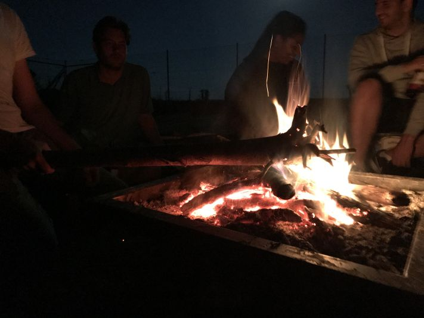Monday
It was time for some sight seeing. "But that's super crazy lame!" you think. Well, we didn't see the regular super crazy lame monumental touristy sights. We took an
Alternative Berlin Tours Tour Through Regular Berlin
which was all about malicious mischief the Berlin street art scene. Because the tour guides couldn't handle our combined power, we were split into two groups. One was guided by a Scotsman and the other by an Australiaswoman. The Aussie was cooler.
Nah, just kidding. They were both cool. (Except the Aussie was actually cooler.) But seriously, that tour is a great thing if you go to Berlin and want to do something cool that you can brag about later among your friends who just do the normal touristy stuff.
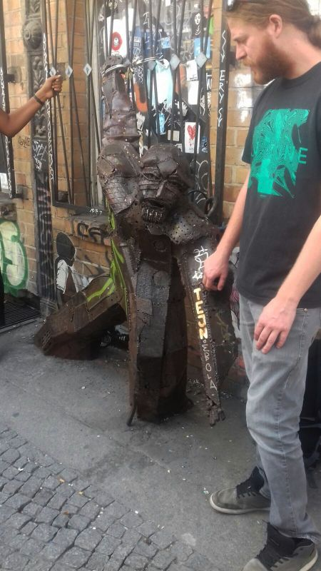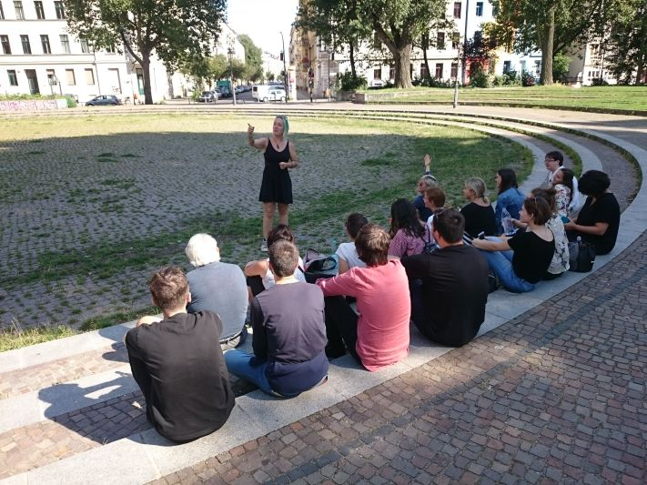
We were educated about the difference between graffiti and street art (but we won't tell you, take the tour), we were enlightened about how those things are created, we were introduced to some famous artists (sadly not personally). We were also taken to cool local places where cool locals hang out and embrace the cool location. Like this staircase that led to a shop where you can buy art from cool local artists:
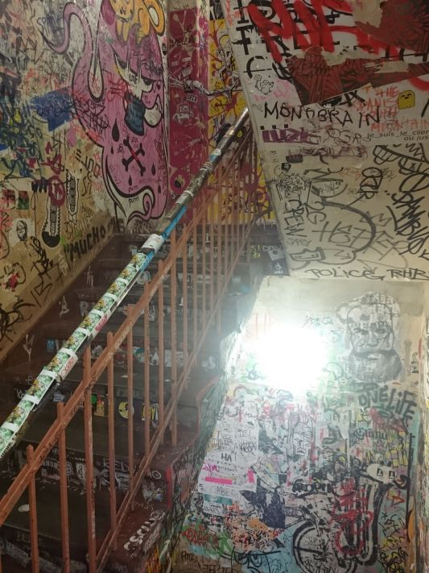Or this tree house right in the middle of Berlin:
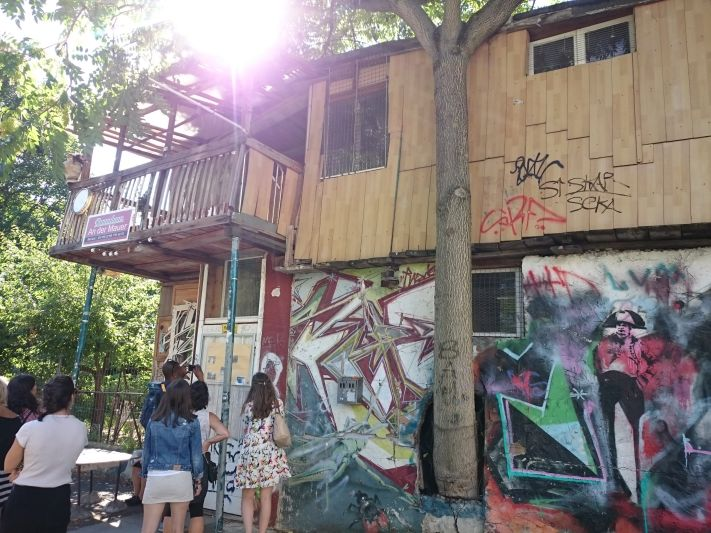Or Kreuzberg. Which is so Turkish that Mert felt homely. The tour ended at YAAM, the Young African Art Market. Nice place, very African.
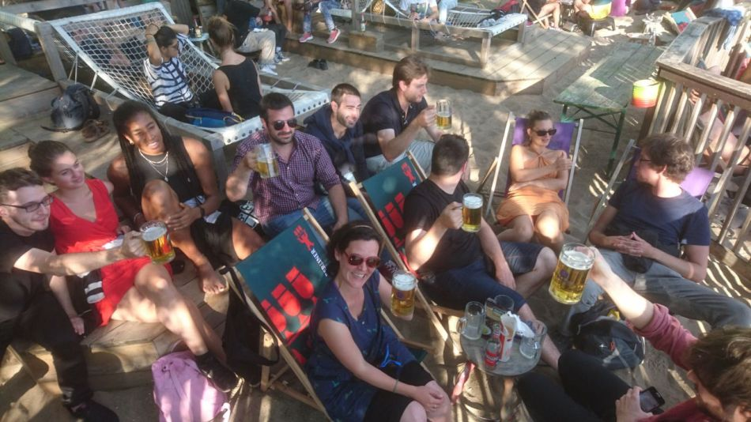Afterwards... because we couldn't help it... we did some
Actual Sight Seeing
, starting with the East Side Gallery. Here, the Berlin Wall is used as a canvas for artists. It hosts memorable pictures like this beauty:
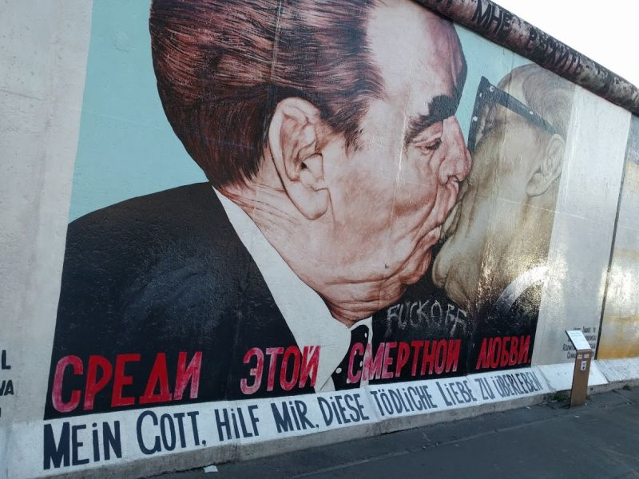In the next picture you can see how high the wall actually is. They made it really difficult to get to the other side.
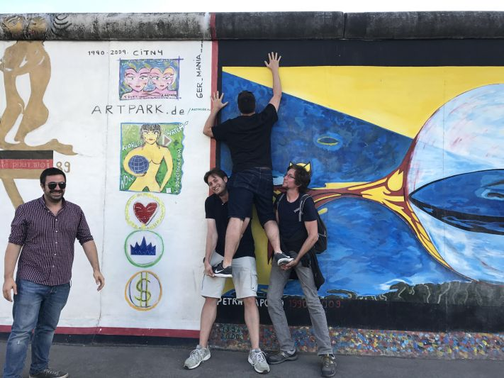... or did they...
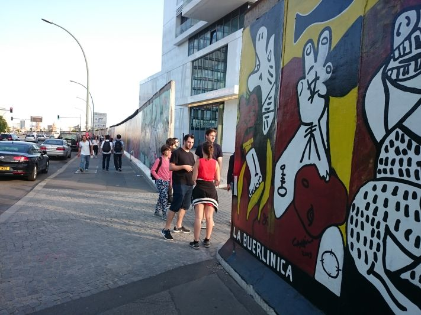Next up was the Memorial to the Murdered Jews of Europe. The problem with this place is that it's such a unique and cool piece of architecture that it distracts from why it's actually there. Good luck not having fun.
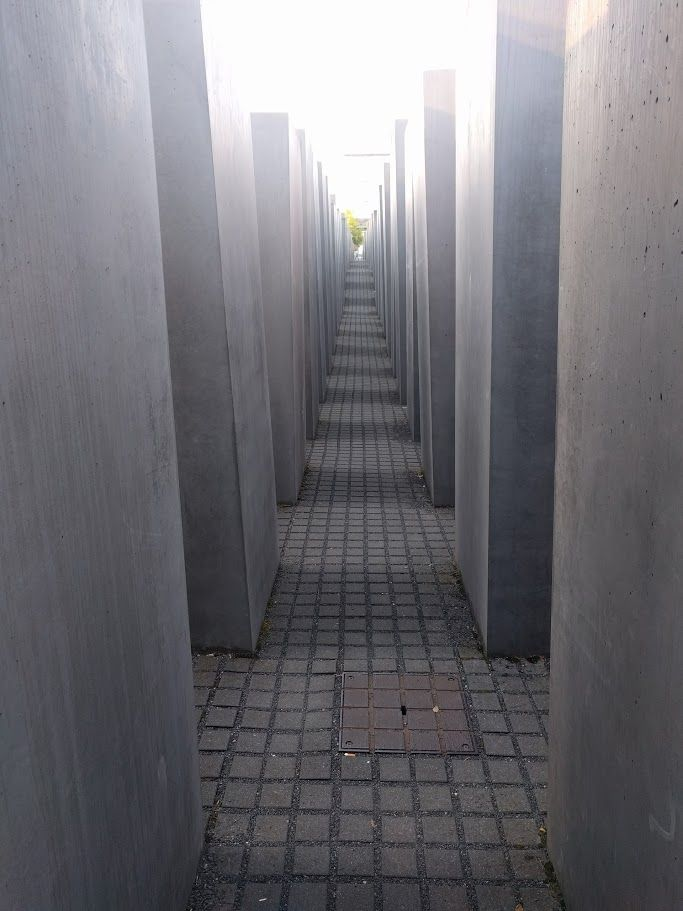Last and least we paid a visit to the Brandenburger Tor which is basically the Leaning Tower of Pisa of Berlin when it comes to selfies and elsies. And we blended right in.
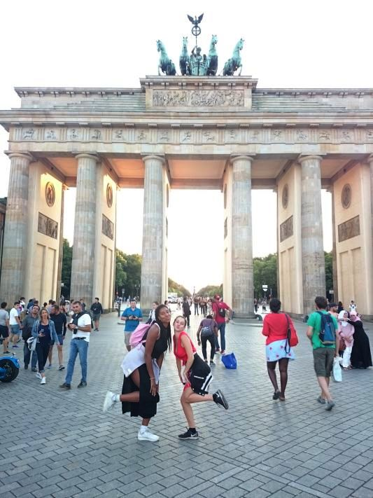For dinner, we dined at Goodtime restaurant in Mitte. Except Fausto whom we left outside. Ok so here's the thing with Fausto. He had this app for keeping track of our finances. And of course, in most cases one person paid for all the others. So it is only natural that most people kinda wanna get rid of the bookkeeper. But well, unfortunately he was still there when we left the place. Great food by the way. And very stylish atmosphere.
Later that eve it was of course fire time again. It kinda looked kinda like the other fires -ish so no picture now. This time, Laura sprinkled us with "Would you rather A or B?" questions. Most of them turned out to be "Would you rather this super horrible option or this slightly uncomfy but somehow also fun alternative?" so that wasn't too much brainwreck going on. You could tell that the questions were not designed for our kind of crowd.
Even later that eve, Albert found some deep questions about deep things and they were discussed among the few people who were still up. That was one of those nights.
Tuesday
was commenced by a proper breakfast session. We asked some kids to take a pic of us and they did a great job.
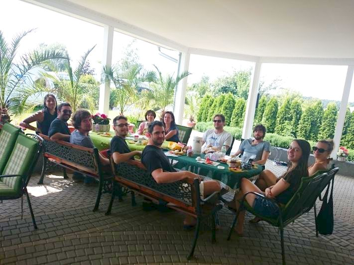
After breakfast we wrote postcards to the real WaitButWhy people. This does not actually contribute much to the intricate storyline that runs through this report. However, the memory of this remarkable writing session will bring a smile to the face of everyone who was there, which is why it has to be mentioned here.
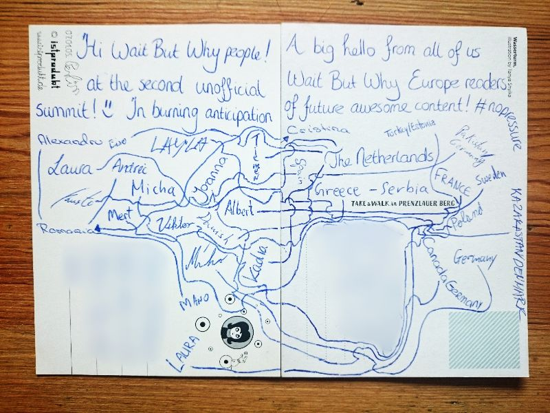For the rest of the day we had planned
Nothing
because we wanted to let people decide what to do. We were hoping for some competing ideas and fights so the boundaries of our organizational skills are pushed and our leadership qualities are put to the test. But most of us were too tired for anything, so most of us just ended up doing some badass chilling by the lake.
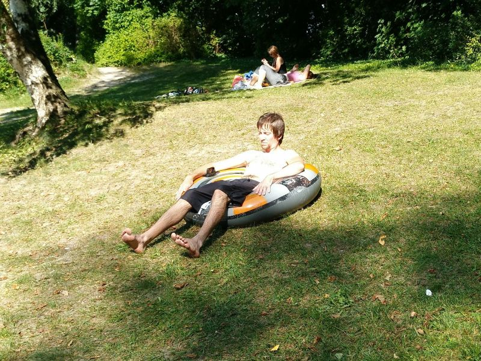Apart from the fact that we did another unsuccessful attempt at ditching Fausto, nothing really mentionworthy happened. We went for dinner to a Greek restaurant in Mahlow. Our Greek guy Micha became friends with them on a former occasion. It became tangible for everyone that the end was near. Mainly because we discussed what to do on our next meeting. Concepts were formed, ideas devised. When should we meet again? Where? How? What could be improved (as ridiculous as it sounds)? The discussions were continued on our well-known walk back to the base camp. And at the obligatory
Last Fire
. And we also did some talk about WaitButWhy there. What was the article that made us discover WBW? Which is our favorite? We had to notice that almost everyone has a different favorite article, which indicates the overall high quality *apple polish*. And we were talking about suggestions for future articles. So here are our demands:
- Consciousness
- Do we live in a simulation?
- Genetic engineering
- "Time and space, relativity and this shit"
- "More spaceyy stuff"
- Nutrition
We also had to notice how cool it is that we all share this large chunk of knowledge, the discussions could start on top of that and we didn't have to begin at zero. It felt great.
Wednesday
, the day of departure for the people who stayed that long. A mix of happiness as a residue of the past days and melancholy about it being over was in the air.
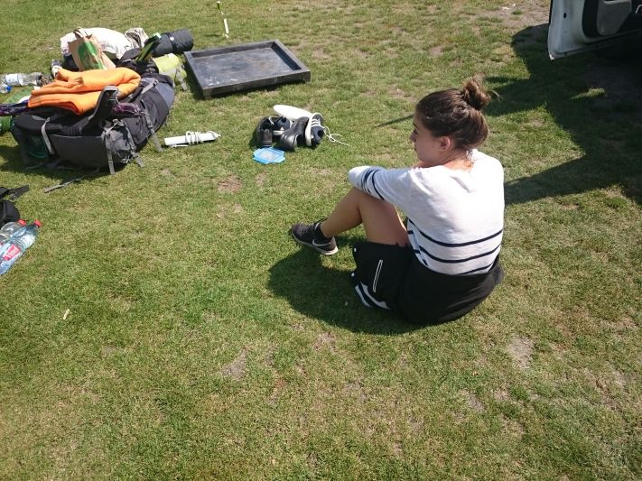The place has become empty, hollow. Carrying the atmosphere of an abandoned graveyard next to a catastrophed nuclear power plant. Only shadows of our tents remained, fading, speaking of the stories that once were.
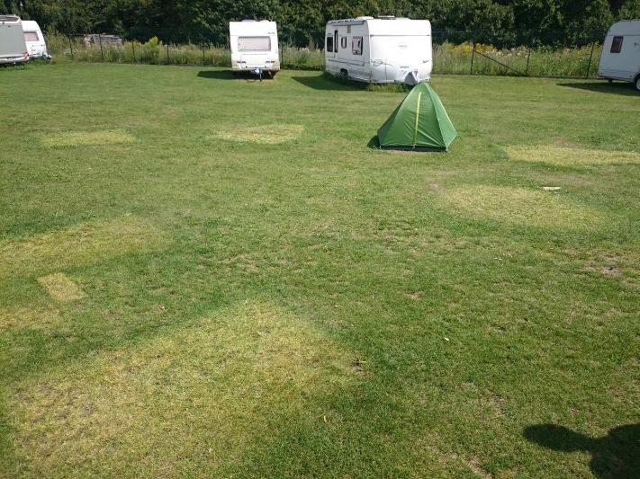Ah, and Fausto and his tent also remained because nobody told him that we were leaving.
Just kidding. It's just that he enjoyed it so much there that he wanted to stay another day.
The last act stood before: Transporting all the stuffs and the remaining four people away into the unknown.
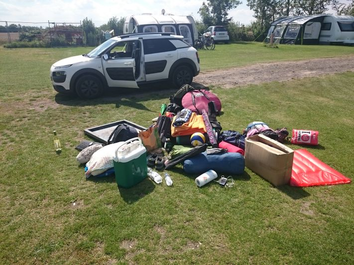But densely tetrised into Tiemen's wonder voiture, we managed. And so we said farewell and went our way.
Summary
It was a super cool and multi cultural event. People came from all over everywhere and the age range covered 16 and 37. And we all got along nicely, even though alcohol and finances were involved. We will do it again. And we are not just saying that to motivate ourselves by making promises to everyone, we're stating it as a fact.
Regular thanks
go to everyone who was part of this! The atmosphere was fantastic! You people are all awesome! Thank you so much for coming and making this a thing!
Special thanks
First we want to thank the dude on the camping place for having us, for letting us do a campfire on his camp, for uncomplicated organization with the complicated mess that we were and for being cool in general. 5/5 stars from us.
Then we want to thank Laura from the Netherlands for providing such an incredible amount of conversation fuel! Where Laura was, there was no awkward silence. There was no awkward silence in general but around her it was like negative.
Whenever something needed to be transported from one place to another, Netherland-Tiemen and his car were there for us. And there was infinite space in that car. Thanks, Tiemen!
The pyrokinesis medal for superior fire bending goes to Kadia from the Netherlands. In the fire's face you could see the love and care that it was treated with.
Uuuh, it's us, the Netherlanders, look how awesome we are, using up half of the special thanks. Damn Netherlanders with their damn awesomeness!
For keeping track of financial happenings with a level of dedication and accuracy that otherwise only Jews possess, Fausto earns a place in our hall of fame.
Props and Kudos to Viktor for being such a good local. He was faster and easier to use than Google translate and Google maps.
We thank Micha from Greece for the fact that no mosquito managed to leave the vicinity without being insulted in Greek.
Loyalty awards go to Danish from Pakistan and Laura from France since they were already present at the Cluj meeting.
An awkwardly self-praising thanks goes to ourselves, Tiemen, Cristina and Mirko for organizing this. We did a great job that deserves some decent discomforting self-back-slapping!
Finally, none of any of this would have taken place if it wasn't for WaitButWhy. We don't even know how to... It's just... You guys are... Srsly tho, it was overwhelming and we owe that to you!
Thank you!